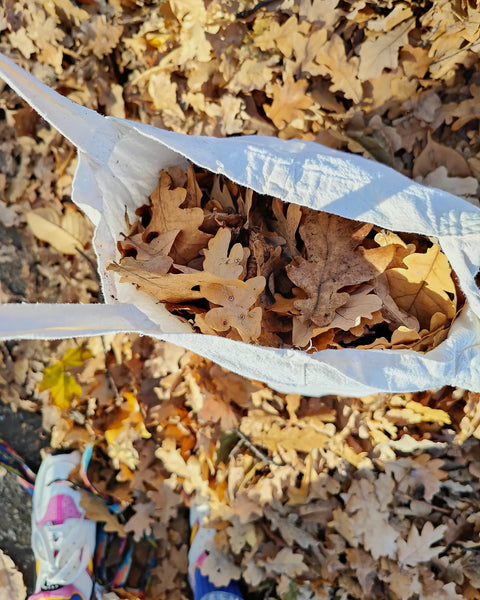
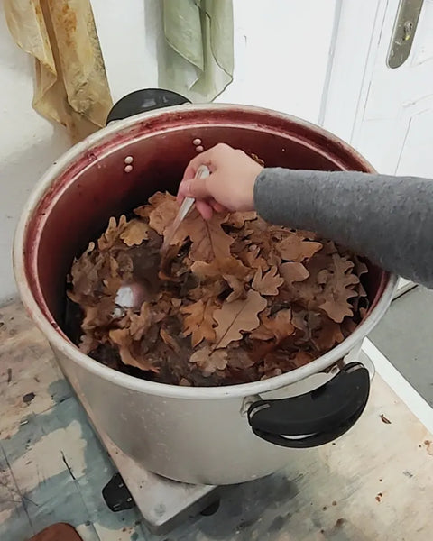
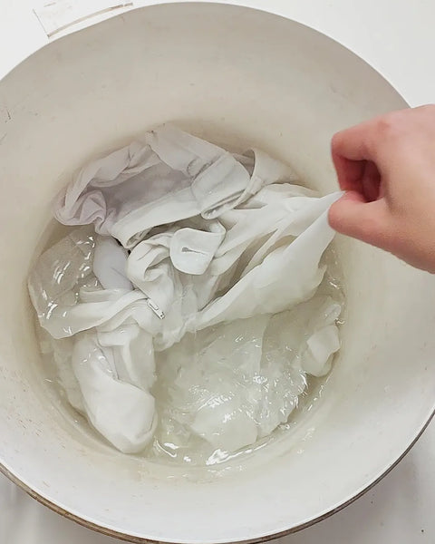
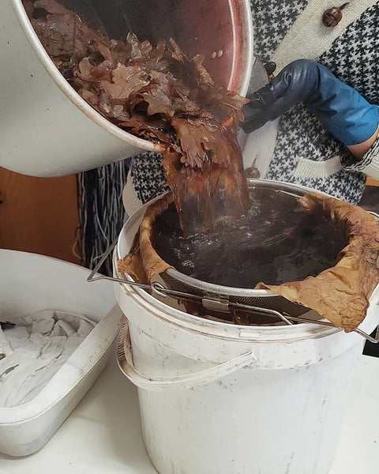
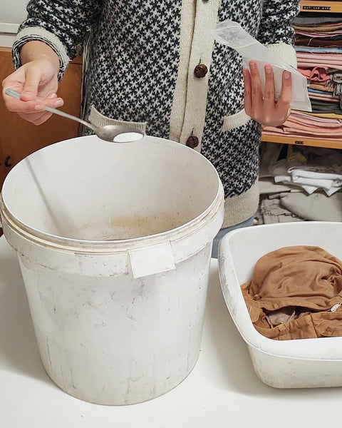
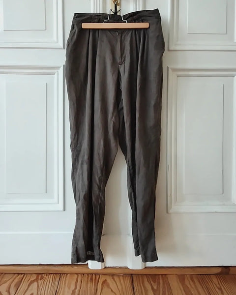
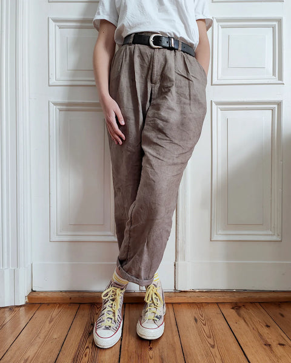

It's autumn, and green has disappeared from nature. Summer might seem like the most abundant season for plant dyers, but don't get discouraged by all the yellows and reds on the trees. Autumn bears beautiful gifts for those who look for seasonal colors. And what's a better color for cold days than a shade of gray that will make you feel like you're wrapped in a thick blanket with a cup of hot cocoa in your hand?
What you need
To dye warm gray you will need:
- oak leaves
- natural fibers: cotton, linen, wool, silk. Blends with a small amount of synthetic fibers work too, but the resulting color might be paler
- iron crystals (iron sulfate)
- a big stainless steel or enamel pot and a steel or wooden spoon; please only use utensils you don't use for cooking
- protective gloves, which might come in handy for those with sensitive skin
Collect the dyestuff
To dye my linen pants I collected a few handfuls of leaves. This dye material is quite potent, so you don't need much. I found them lying on the sidewalk on a sunny autumn day, so they were crispy and dry. If you can't find oak leaves, alternatives for making warm gray are oak galls, alder cones, acorns, or black tea. All these dyes contain high concentrations of beige tannins, which makes them sensitive to modification with iron.

Extract the color
I added the leaves to a big pot and poured in around 5 L of water. The amount of dyestuff and water will depend on how much fiber you want to dye. A general rule is to prepare enough liquid for the fibers to move freely. I heated up the dye and let it simmer just below boiling for a little over an hour.

Prepare the fibers
In the meantime, I soaked my linen pants in warm water. I wanted them to take up the dye evenly once placed in the dye bath. When choosing things you want to dye, make sure you work with natural fibers. Cotton, linen, wool, or silk can be dyed with plants. Synthetic fibers are not suitable.
Note that I didn't mordant the fibers (to mordant means to pre-treat the textile with a pre-fixative metal salt, for example alum). The tannins that oak leaves contain generally bond really well with natural fibers, and I will apply another metal salt — iron — as a modifier and a post-fixative.
For that reason I skipped mordanting, which is usually necessary for lasting color. What you shouldn't skip, though, is cleaning the fibers. Choose a fitting “scouring recipe” according to the type of fiber you work with. For second-hand clothing, it might be enough to rinse your piece in warm water, though I've noticed that linen is prone to storing invisible oily stains, so it might be a good idea to additionally boil it in water with some washing soda beforehand.

Dye the fibers
To avoid staining, I strained the hot dye through a sieve with a piece of cloth laid on top of it. The leaves were mixed with some dirt from the street, so I wanted to filter the dye bath, pouring it into a big plastic bucket.
You might be wondering why I'm not heating up the fibers and the dye. The volume of the dye is big enough to stay hot for a while even if stored in a bucket, and that's enough in my case for the fibers to take up the color. I could even work with a cold dye and leave the fibers to soak in it for a few days, and the result would be the same. When working with a smaller volume of dye, you should either plan more soaking time or simply dye the fibers in a pot set on low heat for around an hour. The fibers basically have to swell to take up the dye, and they swell either when you apply heat or when you let them soak for a long time. I like cold dyeing because it lets me save energy.
I'm not adding any more water — I have enough liquid for my pants to move freely. I let them soak in a hot (then warm) bath for an hour. Remember to stir a lot at the beginning, and to move the fibers regularly after the initial 15 minutes if you want the dye to take up evenly.

Modify the color
After an hour, I poured some hot water into another bucket and added a pinch of iron crystals to make an iron bath. I took the pants out of the dye bath, squeezed out the liquid, and, without rinsing, placed them in the iron solution. They stayed there for 10–15 minutes, until they got a nice grayish tinge.
If you don't have iron crystals at home, you can make your own iron water with rusty nails and white vinegar. Cover the nails with vinegar, top with water, and let the solution develop for at least two weeks. This way you can produce iron acetate at home, which is actually less harsh on the fibers but takes longer to make and has a shorter shelf life than iron sulfate.

Deepening the color
You decide which shade to go for and at what stage to finish the process. Pure beige from oak leaves was actually lovely; the first beige-gray I got was great too, but I wanted a proper dark gray. To make the color darker, I used my usual strategies. After the first iron bath, I steamed the fibers — putting them in a sieve, placing the sieve over a pot with boiling water, and putting a lid on top. This trick makes the tannins oxidize and get darker. It was still not my color of choice, so at this stage I simply repeated the process. I rinsed the pants, placed them in a heated dye bath for an hour, modified the color in the same iron bath, and steamed them again. That was exactly the color I wanted, so I rinsed the pants thoroughly and hung them to dry.

Is this color lightfast?
Yes. Tannins can actually get even darker when exposed to direct sunlight. You might have noticed raw wood getting darker over time — it's the same process.
Iron is a metal mordant that binds the fibers and the dye, so the color is washfast too. That said, you should be careful not to use harsh detergents. I wash all my plant-dyed clothing by hand using wool soap.
Another thing to remember is that acidic stains might discharge (discolor) the dye. If you get a lemon juice stain on your iron-modified clothes, make sure to soak it in pure water right away, but it's best to avoid acidic food around your clothes altogether.

The therapeutic function of crafting
For me, dyeing clothes with plants isn't an aesthetic choice, though I absolutely love natural colors. The thrill lies in the act of creating and changing matter with my own hands. Crafting lets me experience my own causative power, a force that lies within me. It could be any other craft, and in fact it often is. I love painting, sewing, and knitting; I would even add handwriting and gardening to the list. Anything that makes me use my hand–brain connection has a soothing effect on my mental state.
Questions? I am here to help. I hope you will enjoy this colorful practice and find joy in the little things.